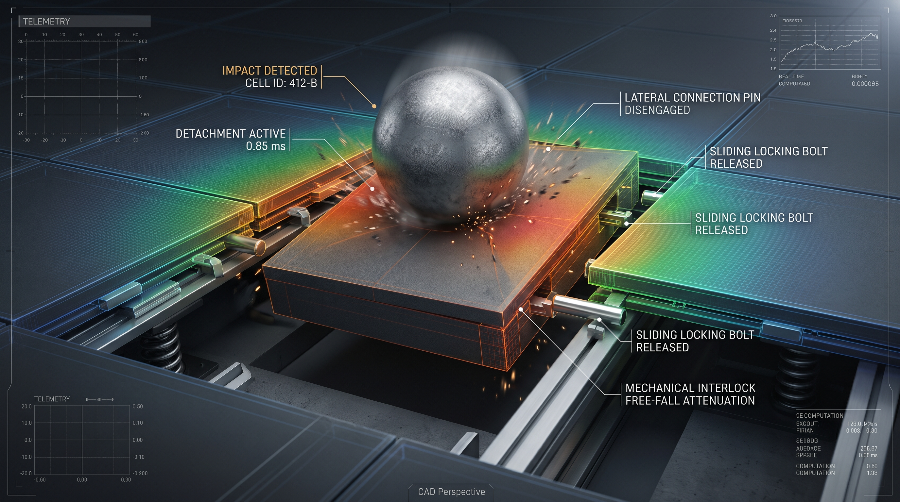
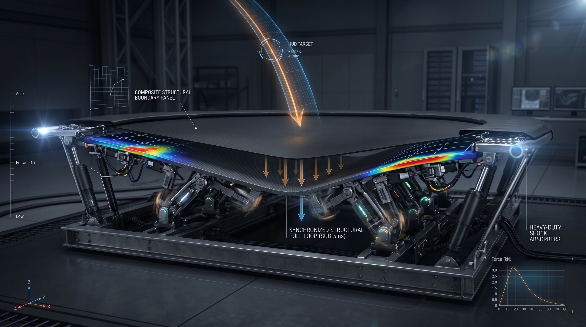
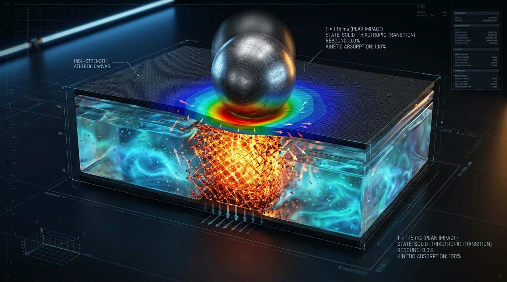
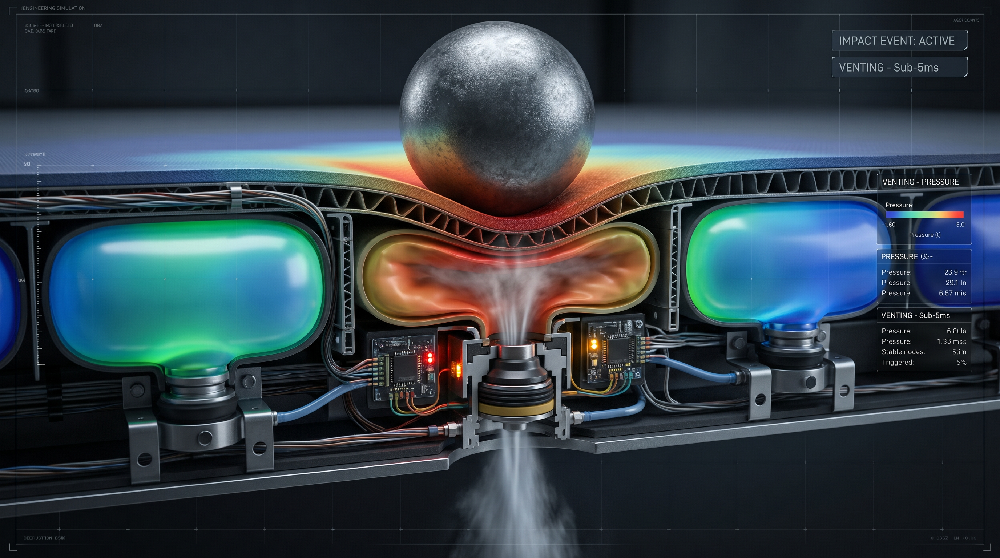

Connected Sections Model
Features independent, interlocking dark gray composite tile blocks that monitor force signatures. Upon impact calculations, adjacent lateral connection link pins immediately disengage, allowing individual targeted module cells to drop vertically while surrounding sections maintain structural rigidity.
- Sub-millisecond microprocessor-controlled separation loops [17/501,355]
- Solenoid-driven horizontal locking bolt fasteners [17/501,355]
- Mechanical interlock free-fall load attenuation panels [17/501,355]

Trampoline Sub-Floor Model
Integrates a matrix of high-speed compact jointed robotic arms and micro-stepper motor linkages hidden underneath an athletic canvas. Sensors track incoming trajectories to execute a synchronized structural pull loop, drawing a suspended rigid floor panel downward before impact occurs.
- Automated tracking reticle path diagnostics [Specs_TUP64682.pdf]
- Heavy-duty shock absorption frameworks [Specs_TUP64682.pdf]
- Sub-five millisecond active canvas displacement spooling [Specs_TUP64682.pdf]

Smart Liquid Model
Employs localized fluid-filled containment jackets charged with responsive thixotropic gel. The moment an extreme velocity load strikes the surface, the fluid transitions from a free-flowing state into a dense, rigid solid structure to swallow kinetic energy and stop bounce-back recoil entirely.
- Dynamic phase-changing fluid dynamics architecture [Specs_TUP64682.pdf]
- Zero-rebound kinetic energy capture metrics [Specs_TUP64682.pdf]
- Localized gel containment bladders beneath surface sheets [Specs_TUP64682.pdf]

High-Pressure Air Model
Utilizes a dense matrix of high-pressure air pocket cells driven by variable-porosity pneumatic aperture control valves. Microchip-controlled sensor nodes continuously read localized pressure shifts, venting air volume under a sub-five millisecond loop to create a safe deflection pocket right on impact.
- Microprocessor-triggered automated aperture venting valves [Specs_TUP64682.pdf]
- Real-time telemetry pressure tracking arrays [Specs_TUP64682.pdf]
- Variable independent cell pressure distribution metrics [Specs_TUP64682.pdf]